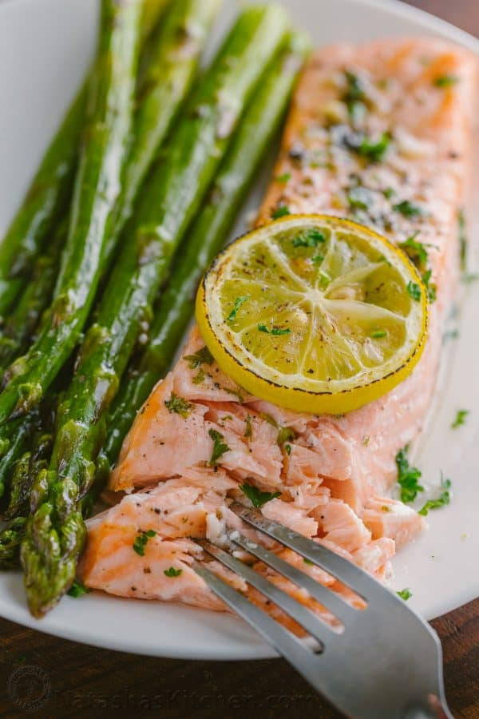

Salmon Asparagus Meal Prep

Salmon is high in omega 3's and fatty acids, and should be incorporated into our diet regularly.
Using an air fryer helps prepare this dish quickly and mess free.
Ingreidents:
- Salmon fillets
- Asparagus
- butter
- Salt, peppr, red chilli powder
- Garlic
Steps:
- Sprinkle salt garlic powder over salmon
- Cook salmon in air fryer for 10 minutes at 400F
- While salmon is cooking, add ghee to a pan and stiry for asparagus
- Once it is halfway cooked, at a tablespoon of butter
- Once butter is melted, add minced garlic and red pepper powder